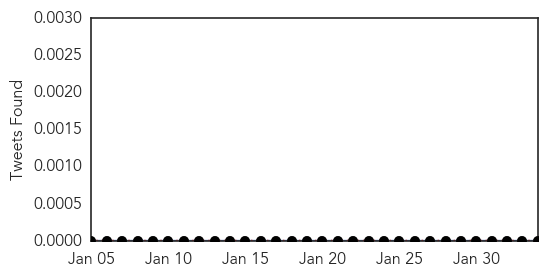
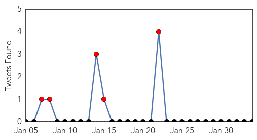

Hemmorhagic Fever
30-Day Web Trend
30 alerts, 0 warnings

30-Day Twitter Trend
0 alerts, 0 warnings

Article Locations

Article Confidences

Top Articles:
-
No articles found for Feb 03, 2014
Top Tweets:
-
No tweets found for Feb 03, 2014
Swine Flu
30-Day Web Trend
8 alerts, 6 warnings
30-Day Twitter Trend
6 alerts, 0 warnings

Article Locations
Article Confidences

Top Articles:
Top Tweets:
-
No tweets found for Feb 03, 2014